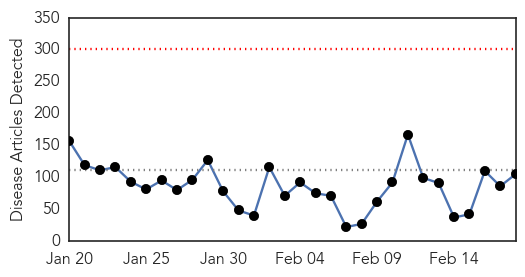
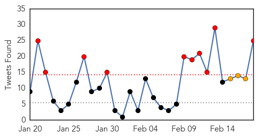
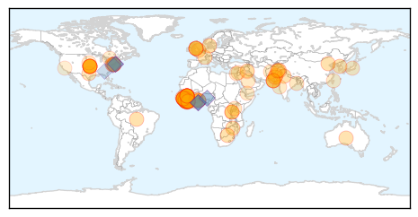
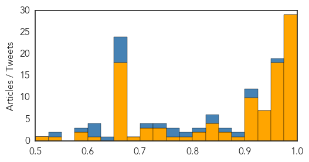
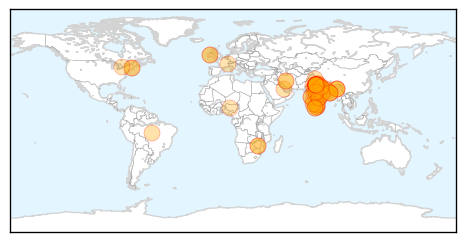

Ebola
30-Day Web Trend
0 alerts, 0 warnings

30-Day Twitter Trend
10 alerts, 3 warnings

Article Locations
Article Confidences
Top Articles:
- 1.000
- SLeone hunts infected as Ebola crisis hits 'turning point'
- 1.000
- SLeone hunts infected as Ebola crisis hits 'turning point' - Sierra Leone
- 1.000
- SLeone hunts infected as Ebola crisis hits 'turning point'
- 0.999
- SLeone hunts infected as Ebola crisis hits 'turning point'
- 0.999
- Russia May Start Testing 3 Ebola Vaccines on Primates in March – Ministry
- 0.999
- Liberia says six cases of Ebola remains nationwide --China Economic Net
- 0.998
- Ebola cases fall in West Africa, but challenges remain - WHO
- 0.996
- Sierra Leone health workers go door-to-door in search of Ebola patients
- 0.996
- Rapid Detection and Response Are Essential to Stopping Ebola
- 0.996
- Ebola outbreak declines letting schools to reopen in Liberia
- 0.995
- United Nations cautions against complacency in Ebola progress
- 0.994
- "The Pattern of the Ebola Outbreak Has Changed"
- 0.994
- Attacks on health workers hamper Ebola fight
- 0.993
- Schools In Liberia Finally Reopen Following 6 Month Closure Due To Ebola
- 0.992
- First results from Ebola vaccine trial show acceptable safety profile
- 0.991
- Guinea: Reopening schools safely - partnering with families and communities
- 0.990
- Threat of Deadly Pathogens on the Rise Thanks to Climate Change
- 0.989
- Senegalese Ebola Corridor Delegation Interacts Health Minister
- 0.989
- UN development chief begins last leg of West Africa mission
- 0.989
- Senegalese Ebola Corridor Delegation Interacts Health Minister
- 0.986
- Gov’t explains 60 days zero Ebola plan
- 0.985
- UN to issue first report on Ebola funds
- 0.982
- UN development chief begins last leg of West Africa Ebola mission
- 0.980
- One paragraph that explains why we haven't yet found an Ebola cure
- 0.980
- Governor appoints MSP superintendent
- 0.980
- Teen killed in Essex shootout had 6 weapons
- 0.979
- Researchers volunteer to fight Ebola
- 0.978
- US Ambassador John Hoover raps press on Ebola Prevention Vaccine for Sierra Leone
- 0.977
- MSF Month in Focus: February 2015
- 0.968
- WHH empowers Banana Island, Sierra Leone to resist Ebola
- 0.968
- Sierra Leone launches house to house search to stop spike in Ebola cases
- 0.968
- Diagnosing Ebola in Sierra Leone
- 0.966
- KCCR awaits WHO certification
- 0.952
- My journey on the tortuous Ebola trail
- 0.951
- President Koroma Hosts UNDP Administrator
- 0.951
- Health Ministry Receives More Items for Ebola Fight
- 0.951
- Mambu Challenges 'Credibility' of Auditor Report
- 0.951
- WHO Mutilated Allison's Body? Eyewitness
- 0.951
- Liberia: U.S. Congressional Staffers' Delegation Calls On Ellen
- 0.951
- Missing Ebola Funds – Anti-Corruption steps in
- 0.951
- Sierra Leone, Belgium Envoys Present Credentials
- 0.951
- Taylor-Era Wartime Timber Company Penalized, Accused of PUP Breach
- 0.951
- Civil Society Meet On Trial Vaccines
- 0.951
- Don't Elect Childish Leadership
- 0.951
- Why China's Leaders See Corruption as a Mortal Threat
- 0.951
- Uzbek Rights Activists Prevented From Leaving For Seoul To Get Award
- 0.951
- BJP dubs Mamata's reshuffling exercise as serving lollipops
- 0.943
- Sierra Leone launches house to house search to stop spike in Ebola cases
- 0.941
- Sierra Leone: Sierra Leone goes door-to-door to fight Ebola
- 0.938
- Youngstown News, Success in fight against Ebola
Showing top 50 articles...
Top Tweets:
- 0.952
- Paper Test Quickly Detects Ebola Dengue And Yellow Fever - Scientific American http://t.co/3KxH69Objk ebola EVD
- 0.916
- RT: .@SavetheChildren has distributed Ebola prevention kits to 783 schools & provided 532 schools w/ Ebola safety training in …
- 0.911
- [GUARDIAN] Ebola: British health worker brought to UK from Sierra Leone for assessment
- 0.896
- RT: 22% of patients Hosp in SL between 2011&2014 had anti-Ebola virus (EBOV) IgG or IgM suggesting prior exposure 2 Eb…
- 0.851
- RITE (Rapid Isolation and Treatment of Ebola) teams fighting the epidemic in Liberia. Read more http://t.co/Qq9zABRQyU
- 0.832
- RT: RITE (Rapid Isolation and Treatment of Ebola) teams fighting the epidemic in Liberia. Read more http://t.co/Qq9zABRQyU
- 0.832
- RT: RITE (Rapid Isolation and Treatment of Ebola) teams fighting the epidemic in Liberia. Read more http://t.co/Qq9zABRQyU
- 0.803
- Across 3 worst affected countries total of confirmed Ebola cases per wk has significantly declined since 1 Jan. EbolaResponse
- 0.793
- RT: Ebola virus must be celebrating over what's happening in SierraLeone - attention shifting from fighting virus to fightin…
- 0.759
- Attacks on health workers hamper Ebola fight - Deutsche Welle http://t.co/crHQt1bJdu ebola EVD
- 0.752
- RT: UNSG appelle UNGA à ne pas relâcher la vigilance contre Ebola EbolaResponse
- 0.742
- RT: UNSG: Avec une action vigoureuse et efficace nous pouvons juguler l’épidémie d’Ebola EbolaResponse
- 0.719
- RT: Latest map of Ebola outbreak in WestAfrica with stats for Liberia Guinea & Sierra Leone http://t.co/sz6s7vNAJS
- 0.665
- Ebola survivor says virus difficult to stamp out - The Detroit News http://t.co/wY1RXhjmHl ebola EVD
- 0.665
- Ebola survivor says virus difficult to stamp out - The Detroit News http://t.co/dy7ZlN15nx ebola EVD
- 0.665
- Ebola survivor says virus difficult to stamp out - The Detroit News http://t.co/SU9cgkONbU ebola EVD
- 0.665
- Ebola survivor says virus difficult to stamp out - The Detroit News http://t.co/R0YjO0x4Oa ebola EVD
- 0.665
- Ebola survivor says virus difficult to stamp out - The Detroit News http://t.co/8JIJ9D2fk8 ebola EVD
- 0.665
- Ebola survivor says virus difficult to stamp out - The Detroit News http://t.co/0cKlm3xloA ebola EVD
- 0.630
- Hopkins helps make training videos on Ebola and infectious disease care - Baltimore Sun http://t.co/Cg3ygTYYV0 ebola EVD
- 0.623
- [VOA] Sierra Leone Ebola Survivors Help Train Health Care Workers http://t.co/nu5Jef49Y0 EBOLANEWS
- 0.602
- Liberia's Children Go Back to School but Ebola Is Not Over Yet - TIME http://t.co/GZ39IIuusC ebola EVD
- 0.602
- Liberia's Children Go Back To School But Ebola Is Not Over Yet - TIME http://t.co/xlZhQdEMsc ebola EVD
- 0.580
- BREAKING NEWS: Eastbourne person being tested for Ebola - Eastbourne Herald http://t.co/E24dIFD9Wh ebola EVD
- 0.541
- Today marks 1 month since Mali was declared free of Ebola Virus Disease but EbolaResponse continues https://t.co/MlD6BPeEC8
Swine Flu
30-Day Web Trend
23 alerts, 6 warnings

30-Day Twitter Trend
0 alerts, 0 warnings

Article Locations
Article Confidences

Top Articles:
- 1.000
- First positive case of swine flu in Nagaland, patient stable
- 1.000
- MP: Greet with ‘namaskar’ to keep swine flu virus away
- 1.000
- Frightened Delhi battles swine flu: Hospitals stock up on drugs as scientists fight to stop an H1N1 epidemic
- 1.000
- Meghalaya under watch for swine flu
- 1.000
- Swine flu deaths at 663, people affected cross 10,000
- 0.999
- Delhi govt. takes measures to tackle Swine Flu menace
- 0.999
- Swine flu in India: Kashmir on alert after two swine flu deaths, 71 positive cases
- 0.999
- Rap over mask & gloves in meet
- 0.999
- Swine flu: 'Too many cases. Hopefully numbers will fall soon'
- 0.999
- Swine Flu spreading tentacles, death toll in just three states rises to 300
- 0.999
- 9311 Cases Of Swine Flu Registered, 624 Lives Claimed
- 0.999
- Swine flu claims 81 in MP
- 0.999
- Kid dies, 5 more test positive for swine flu in Bhopal
- 0.998
- Govt. monitoring swine flu situation, assures Nadda
- 0.998
- Government monitoring swine flu cases, test rates halved in Delhi
- 0.998
- Government monitoring swine flu cases, test rates halved in Delhi
- 0.998
- First swine flu case in Northeast
- 0.998
- Government monitoring swine flu cases, test rates halved in Delhi
- 0.998
- Government monitoring swine flu cases, test rates halved in Delhi
- 0.998
- Swine flu outbreak: Blame govt's shamefully low public health expenditure
- 0.998
- Government monitoring swine flu cases, test rates halved in Delhi
- 0.998
- Govt. monitoring swine flu situation, assures Nadda , AniNews.in
- 0.998
- Swine flu patients complain of inadequate medical facilities in hospitals , AniNews.in
- 0.997
- Government monitoring swine flu cases, test rates halved in Delhi
- 0.997
- Health officials confirm outbreak of swine flu in Kashmir, ask people not to panic
- 0.997
- Delhi cracks whip on fleecing labs
- 0.997
- Swine flu: 46 lakh people screened in Rajasthan
- 0.997
- Two die of Swine Flu in Himachal
- 0.996
- plus in India, refuses to die
- 0.996
- Banning pig farming sure option for controlling Swine Flu
- 0.996
- Swine flu in India: 5 new cases but disease on the downslide in Kolkata: Health official
- 0.996
- SMHS doctors’ body concerned over outbreak, blame authorities
- 0.996
- Swine flu deaths at 663, people affected cross 10,000
- 0.996
- Toll Rises as Virus Resists Summer Heat; Tamiflu Drug Shortage Persists
- 0.996
- Swine flu kills 600-plus in India, refuses to die
- 0.996
- Swine flu kills over 600 people in India, worries health ministry and doctors
- 0.995
- Delhi labs to halve swine flu test rates
- 0.995
- Delhi labs to halve swine flu test rates
- 0.995
- Delhi labs to halve swine flu test rates
- 0.995
- Delhi labs to halve swine flu test rates
- 0.995
- Even doctors find it difficult to get Tamiflu in Delhi
- 0.995
- Kashmir on alert after two swine flu deaths
- 0.994
- Kashmir on alert after two swine flu deaths
- 0.994
- Swine flu Death toll Reaches 144 and 1392 cases
- 0.993
- 8 People Dying of Swine Flu Every Day, Says Rajasthan Government
- 0.993
- Kashmir on alert after two swine flu deaths
- 0.993
- Kashmir on alert after two swine flu deaths
- 0.993
- Kashmir on alert after two swine flu deaths
- 0.992
- Woman tested positive for swine flu in Nagaland
- 0.992
- ‘H1N1 may subside in a week or two’
Showing top 50 articles...
Top Tweets:
-
No tweets found for Feb 18, 2015